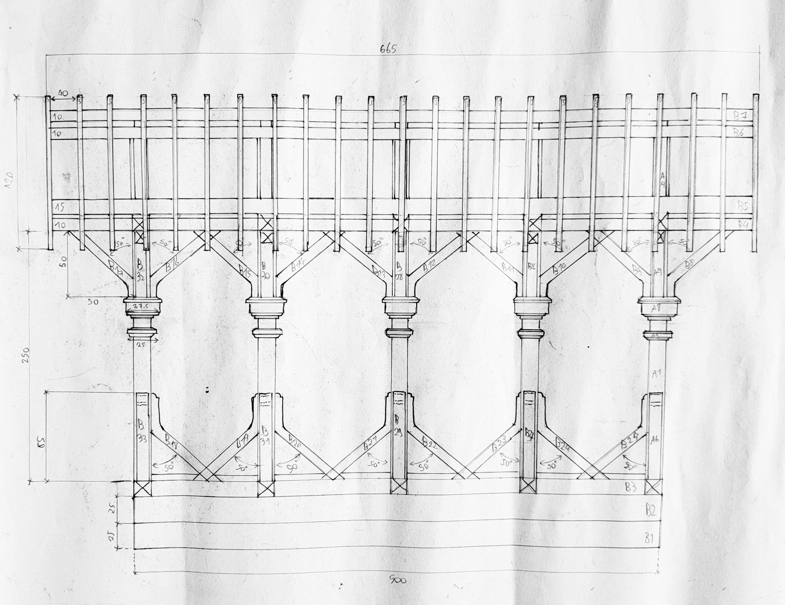
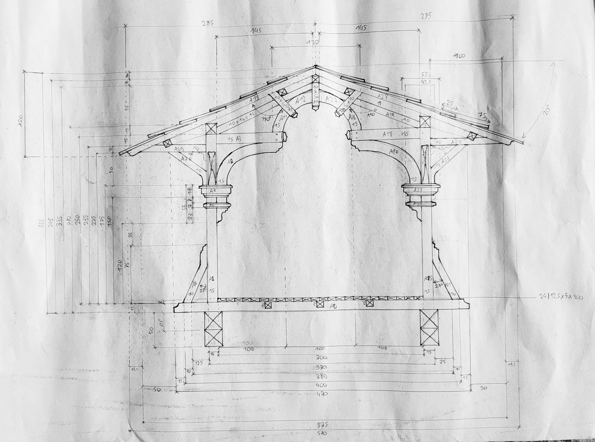

Neuroscience
B.S. - memory and cognition
Cognition, perception, brain/behaviour, scientific method.

Working note
Toward art, aesthetics, architecture & anthropology
Evolutionary architectonics - exploring how constructed environments shape human perception, behaviour, development and culture.
Neuroscience · Biology · Anthropology · Ethics · Architecture
What kind of human does a given built environment produce?
Built environments are not merely containers for human activity. They alter the physical, perceptual and social conditions under which people develop and act. From an evolutionary perspective, architecture can therefore be considered a form of human niche construction: constructed environments modify the selection pressures, affordances and developmental conditions experienced by their inhabitants.
That is the question I keep returning to. It grew out of neuroscience and biology, was sharpened by anthropology and ethics, and is now being tested against actual buildings - by measuring, drawing, and making, not only by theorising. I call the inquiry evolutionary architectonics: the organised making of spatial environments, asked what kind of human they tend to produce.
A small literature now treats built environments in these terms - not the generic 'evolutionary architecture' of biomimicry, but niche construction proper: material innovations, including shelter, as evolutionary scaffolds (Rocha, 2026); indigenous housing as architectural niches (Kartal & Kartal, 2026); cities as niches that bias phenotype (Downey, 2016); urban form as material scaffolding of behaviour and cognition (Nagatsu et al., 2023).
The immediate research interest is not to assume that architecture produces genetic evolution, but to investigate the mechanisms linking environment, development, behaviour, culture and, potentially, longer-term selection.
Perception of spatial order - including proportion, where it is salient - is one such mechanism, among others. It is not the question.
A sketch of the causal chain, not a finished theory.
University of Montana, 2015-2019 · MPhil Applied Ethics, Linköping, 2025
B.S. - memory and cognition
Cognition, perception, brain/behaviour, scientific method.
B.S. - ecology and organisms
Evolution, ecology, organism-environment systems. The vocabulary in which a built niche is more than a metaphor.
B.A. · honors: Species and Culture
Human variation, culture, classification of environments. Ethnobiological work on how people order the living world they inhabit.
Biocracy: A Nietzschean Alignment - MPhil Applied Ethics, Linköping
The thesis treats technologies as environments that either keep biological cognitive capacities in use (eutech) or make them unnecessary (dystech). The ethical claim is developmental and selective: what we surround ourselves with can strengthen, maintain, or atrophy human capacities. That is the hinge toward buildings. A street, a room, a town is a slower environment of the same kind - harder to leave, and equally capable of altering the conditions under which capacities develop. Evolutionary architectonics extends that argument from technical niches to spatial ones. DiVA: diva2:2034306.
How technologies and environments can alter the conditions under which human capacities develop, are maintained, or become unnecessary.
Status: independent study of traditional architecture; forthcoming junior placement at Arcas Paris with William Pesson. Learning buildings through observation, measurement, drawing and making.
La Table Ronde de l'Architecture - summer school, Alsace, 2026
Assisting Nadia and Noé Morin. Travelling through towns, making measured drawings - plans, sections, elevations - alongside historical research. An exercise in seeing how traditional buildings are ordered: measure, hierarchy, the fit of parts, including proportion where the building itself uses it. Study drawings, not a professional set. The point is to understand environments by inhabiting and measuring them.


Victorian Alpine Cattle Bridge Fantaisie - after Dirk Mortier's workshop
First measured architectural design, hand-drawn, after a week of traditional timber-frame work. Fictional; not built. Structural logic worked out on paper: span, members, load path.


Interactive systems and programming are tools for investigating environments: simulation, agent behaviour in space, perhaps later VR. Not the subject of the inquiry - practice in specifying a space, an observer, and a set of possible actions.
What this kind of doctorate needs, and what is already there:
| Requirement | Evidence |
|---|---|
| Articulated research question | Evolutionary architectonics: what kind of human a built environment produces |
| Scientific literacy | B.S. Neuroscience; B.S. Biology; B.A. Anthropology |
| Independent written research | MPhil thesis, open on DiVA |
| Learning to read buildings | Measured drawing; timber-frame study; forthcoming junior placement, Arcas Paris |
| Tools for constructed environments | Programming; interactive spatial systems |
| Normative question about capacities | Applied ethics - what environments keep in use or let atrophy |
Work on how people perceive architectural form - including proportion - belongs in this picture as one way a niche is experienced. It is a neighbouring interest, not the doctorate I would write. The inquiry is evolutionary architectonics: built environments as human niches, and what kinds of cognitive, behavioural, social and potentially evolutionary traits they foster or constrain.
If that cannot sit with the project as you currently define it, I would be grateful for introductions to people already working this joint: architectural anthropology, urban niche construction, phenotypic bias in cities, ecological psychology, cultural evolution, human biology of environment.